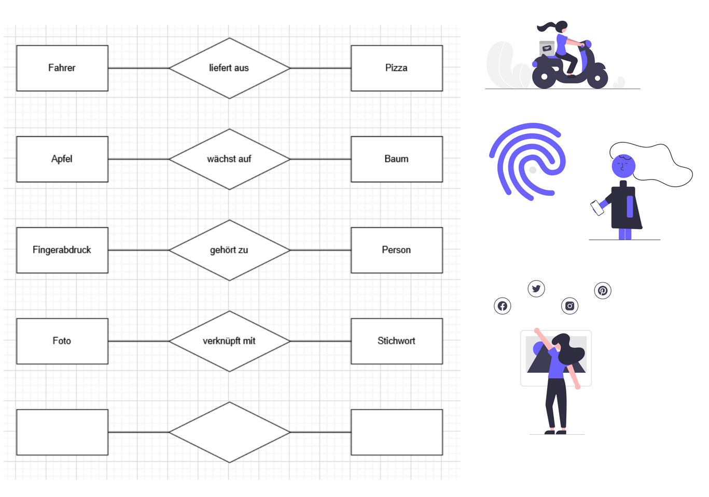

Auf dieser Seite übst du beide Richtungen der Modellierung: vom Sachverhalt zum ER-Modell und zum
Relationenmodell (Seiten 1.10 und 1.11) und umgekehrt vom fertigen Relationenmodell zurück zum ER-Modell.
Grundaufgaben
Aufgabe 1.12.1: Kardinalitäten AFB I
Notiere für jedes ERM in Leserichtung von links nach rechts und von rechts nach links einen Satz.
Ergänze für jedes ERM die Kardinalität (nimm dabei deine Sätze aus 1. zu Hilfe).
Ergänze 1–2 eigene Beispiele mit Kardinalität für das leere ERM.

Abb. 1: ER-Modelle zum Ergänzen der Kardinalitäten
Aufgabe 1.12.2: ERM Flughafen-Datenbank AFB II
Einer Flughafen-Datenbank liegen folgende Fakten und Geschäftsregeln zugrunde:
Jede Fluggesellschaft hat ein Kürzel, einen Namen und einen Stammsitz.
Jedes Flugzeug hat eine Seriennummer, einen Hersteller, einen Typ und eine Passagierkapazität.
Jeder Abflug hat eine Nummer, eine Abflugzeit (Datum und Uhrzeit) und einen Zielort.
Jede Fluggesellschaft hat mindestens ein Flugzeug (seit einem bestimmten Tag). Jedes Flugzeug wird von genau einer Fluggesellschaft betrieben.
Für jeden Abflug wird genau ein Flugzeug eingesetzt. Flugzeuge sind (natürlich) wiederverwendbar.
Aufgaben:
Entwickle ein ERM zu dieser Problemstellung.
Die letzten beiden Punkte (kursiv) beschreiben die „Anzahl an Zuordnungen“ zwischen den Entitäten. Leite daraus die Kardinalitäten ab.
Entwickle aus dem ERM ein Relationenmodell. Entscheide anhand der Kardinalitäten, wie viele Tabellen du benötigst.